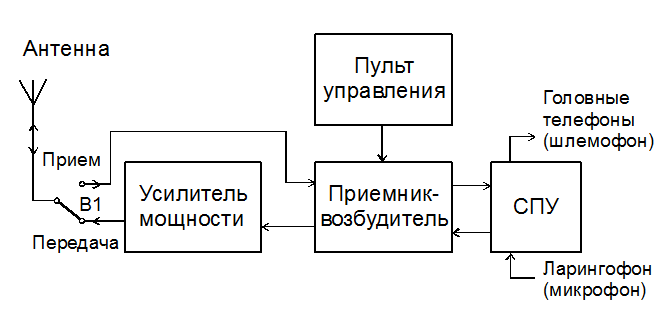
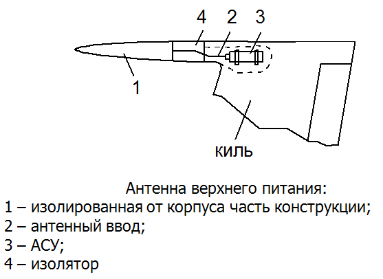
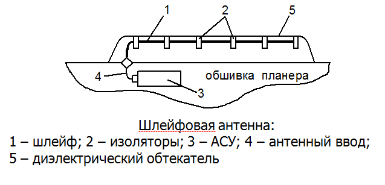
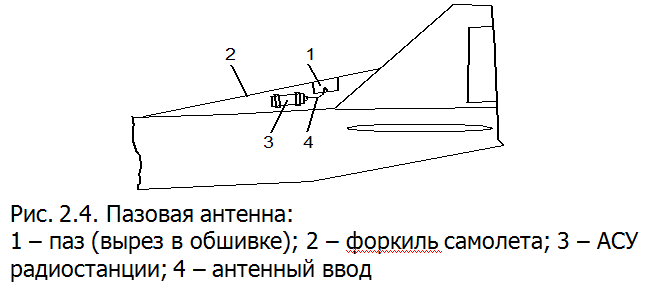
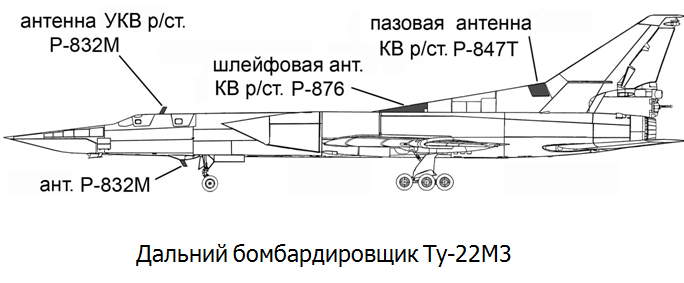
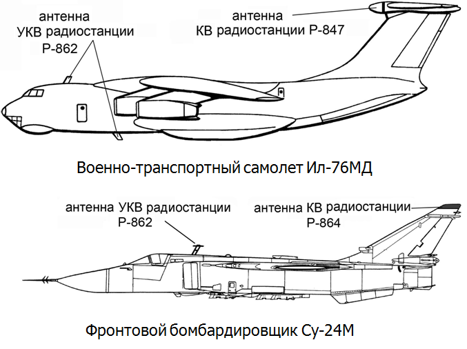
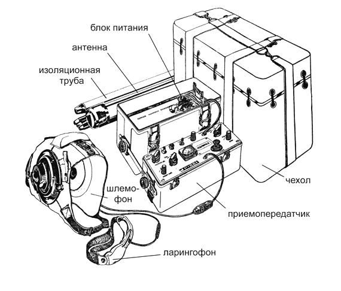
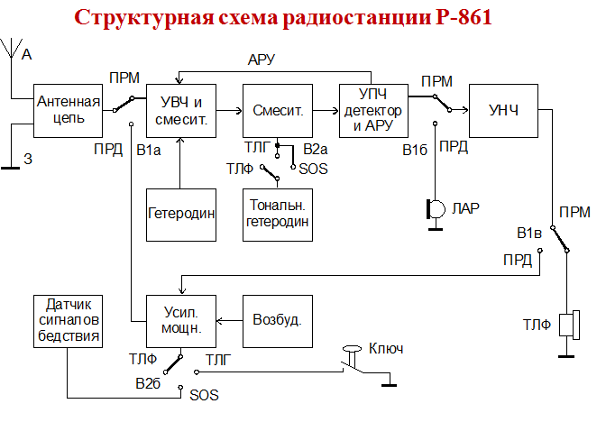

Особенности построения радиостанций дальней связи. Антенные согласующие устройства. Аварийные радиостанции ДКМВ.

Основной элемент радиостанции – приемопередатчик имеет дискретный диапазон частот. Состоит из возбудителя, передающего и приемного трактов. Возбудитель и передающий тракт образуют радиопередатчик, а возбудитель и приемный тракт – радиоприемник. Все бортовые радиостанции имеют общий элемент – возбудитель. Такую схему построения радиостанции принято называть трансиверной. Характерной особенностью трансиверных станций является то, что их можно использовать только в симплексном режиме ведения связи. При симплексной радиосвязи два корреспондента ведут поочередную передачу. При таком виде связи невозможно заставить корреспондента, ведущего передачу, повторить ее в случае сомнений в правильности ее приема.
Дуплексная работа позволяет вести передачу и прием одновременно в обоих направлениях и может быть обеспечена для определенного вида разделения двух каналов (частотное, пространственное и пр.). Обеспечение дуплексной работы приводит, как правило, к усложнению аппаратуры.
Возбудитель радиостанции обеспечивает получение высокостабильных колебаний в нужном диапазоне частот. В режиме передачи эти колебания используются для возбуждения передающего тракта, а в режиме приема выполняют роль гетеродина. При работе радиостанции на передачу возбудитель вырабатывает стабильные колебания заданной частоты, которые поступают в передающий тракт. В передающем тракте происходит умножение частоты возбудителя до значения несущей, усиление по мощности и модуляция звуковой частотой, поступающей от микрофона (ларингофона). Из передающего тракта колебания передаются в антенну через антенное реле (переключатель В1) прием-передача и излучаются в пространство.
При работе радиостанции на прием принятые антенной сигналы через антенное реле поступают в приемный тракт. В приемном тракте происходит усиление, преобразование по частоте и выделение передаваемой речевой информации. В этом случае колебания возбудителя используются для преобразования сигналов по частоте (супергетеродинный прием). На выходе приемного тракта после детектирования выделяется речевой сигнал, который подается через СПУ в телефоны экипажа.
Антенные согласующие устройства
В качестве самолетных антенн для КВ радиосвязи наиболее часто используются антенны верхнего питания (АВП), шлейфовые, пазовые, проволочные и др. В указанном диапазоне частот напряженность поля в пространстве создается как токами антенны, так и токами, наводимыми на поверхности самолета. Это дает возможность получить диаграмму направленности без глубоких провалов. Антенна верхнего питания работает по принципу емкостного способа возбуждения корпуса самолета. В качестве емкостного возбудителя может быть использован штырь или изолированная от корпуса часть конструкции. Наиболее часто возбуждение осуществляется изолированной законцовкой киля.

Шлейфовые антенны работают по принципу индуктивного способа возбуждения корпуса самолета с помощью шлейфа, расположенного вдоль фюзеляжа на расстоянии 10–20 см и закрытого диэлектрическим обтекателем.




Аварийные радиостанции ДКМВ
Аварийно-спасательная коротковолновая радиостанция Р-861 «Актиния» предназначена для обеспечения двусторонней симплексной связи экипажа самолета, потерпевшего аварию, с базами и самолетами (вертолетами) спасательной службы в телефонном и телеграфном режимах. Кроме этого, радиостанция может использоваться в режиме автоматической передачи сигналов бедствия.
Радиостанция широко используется на многоместных самолетах в ВВС и в гражданской авиации. Р-861 устанавливается на Ан-12, Ан-124, Ил-76, Ту-22, Ту-95 и многих других.
Радиостанция обеспечивает следующие виды работ:
• ТЛФ – радиотелефония с амплитудной модуляцией несущей (АМ);
• ТЛГ – амплитудная телеграфия без модуляции несущего сигнала при работе ключом (АТ);
• SOS – амплитудная телеграфия с модуляцией несущего сигнала при работе автоматического датчика сигналов бедствия.
Радиостанция обеспечивает связь с самолетными коротковолновыми радиостанциями и аварийно-спасательными радиостанциями на соответствующих частотах и режимах.
Внешний вид комплекта радиостанции приведен на рисунке.
\
Блок питания закреплен в верхней части корпуса. Он представляет собой две аккумуляторные батареи напряжением 12,5 В, размещенные в специальных водонепроницаемых кассетах.
Антенна радиостанции представляет собой телескопический штырь длиной 5,5 0,5 м, составленный из металлизированных стеклопластиковых звеньев. Антенна устанавливается на опору, состоящую из трех опорных телескопических лучей, ввинченных в основание стойки. Опорные лучи располагаются под углом 120°. Противовес антенны состоит из трех отрезков изолированного провода длиной по 8 м каждый и подсоединяется к приемопередатчику проводом.
